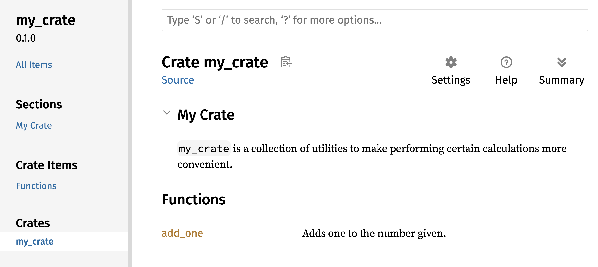
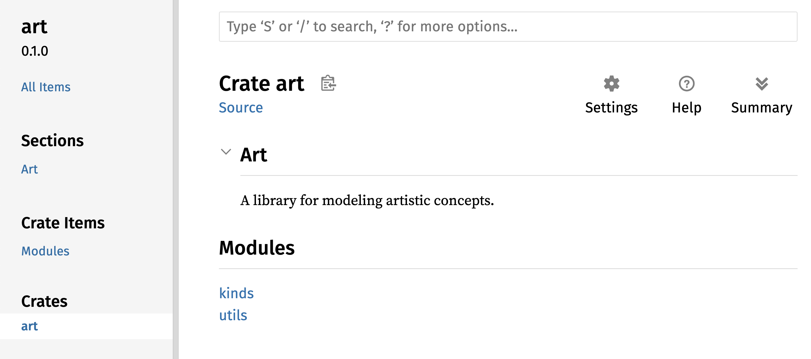
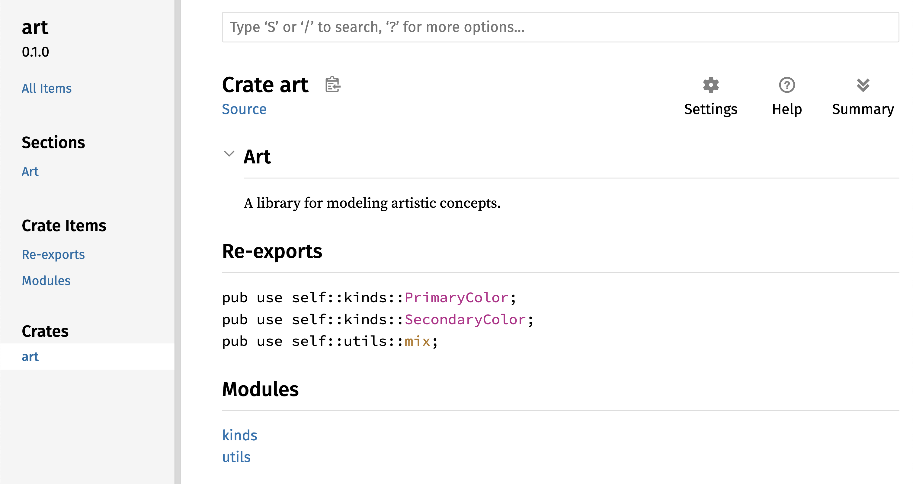

Menerbitkan Crate ke Crates.io
Kami telah menggunakan paket dari crates.io sebagai dependensi proyek kami, tapi Anda juga bisa berbagi kode Anda dengan orang lain dengan menerbitkan paket Anda sendiri. Registry crate di crates.io mendistribusikan kode sumber paket Anda, jadi ia terutama menghosting kode yang open source.
Rust dan Cargo memiliki fitur yang membuat paket yang diterbitkan Anda lebih mudah ditemukan dan digunakan orang. Kami akan membahas beberapa fitur ini selanjutnya dan lalu menjelaskan cara menerbitkan paket.
Membuat Komentar Dokumentasi yang Berguna
Mendokumentasikan paket Anda dengan akurat akan membantu pengguna lain
mengetahui bagaimana dan kapan menggunakan paket tersebut, jadi sepadan
menginvestasikan waktu untuk menulis dokumentasi. Di Bab 3, kami membahas
cara mengomentari kode Rust menggunakan dua garis miring, //. Rust juga
memiliki jenis komentar khusus untuk dokumentasi, yang nyaman disebut
komen dokumentasi (documentation comment), yang akan menghasilkan
dokumentasi HTML. HTML menampilkan isi komentar dokumentasi untuk item
API publik yang dimaksudkan untuk programmer yang tertahu mengetahui
bagaimana menggunakan crate Anda berbanding dengan bagaimana crate Anda
diimplementasikan.
Komentar dokumentasi menggunakan tiga garis miring, ///, alih-alih dua
dan mendukung notasi Markdown untuk memformat teks. Letakkan komentar
dokumentasi tepat sebelum item yang didokumentasikannya. Listing 14-1
menunjukkan komentar dokumentasi untuk fungsi add_one di crate bernama
my_crate.
/// Adds one to the number given.
///
/// # Examples
///
/// ```
/// let arg = 5;
/// let answer = my_crate::add_one(arg);
///
/// assert_eq!(6, answer);
/// ```
pub fn add_one(x: i32) -> i32 {
x + 1
}Di sini, kami memberikan deskripsi apa yang dilakukan fungsi add_one,
memulai bagian dengan judul Examples, dan lalu menyediakan kode yang
mendemonstrasikan cara menggunakan fungsi add_one. Kami bisa
menghasilkan dokumentasi HTML dari komentar dokumentasi ini dengan
menjalankan cargo doc. Perintah ini menjalankan alat rustdoc yang
didistribusikan dengan Rust dan menaruh dokumentasi HTML yang dihasilkan
di direktori _target/doc_.
Untuk kenyamanan, menjalankan cargo doc --open akan membangun HTML untuk
dokumentasi crate Anda saat ini (serta dokumentasi untuk semua dependensi
crate Anda) dan membuka hasilnya di peramban web. Navigasikan ke fungsi
add_one dan Anda akan melihat bagaimana teks di komentar dokumentasi
dirender, seperti yang ditampilkan di Gambar 14-1.

Gambar 14-1: Dokumentasi HTML untuk fungsi add_one
Bagian yang Sering Digunakan
Kami menggunakan heading Markdown # Examples di Listing 14-1 untuk
membuat bagian di HTML dengan judul “Examples.” Berikut beberapa bagian
lain yang penulis crate biasanya gunakan di dokumentasi mereka:
- Panics: Ini adalah skenario di mana fungsi yang didokumentasikan bisa panic. Pemanggil fungsi yang tidak ingin program mereka panic seharusnya memastikan mereka tidak memanggil fungsi dalam situasi ini.
- Errors: Jika fungsi mengembalikan
Result, mendeskripsikan jenis kesalahan yang mungkin terjadi dan kondisi apa yang mungkin menyebabkan kesalahan tersebut dikembalikan bisa membantu pemanggil sehingga mereka bisa menulis kode untuk menangani berbagai jenis kesalahan dengan cara yang berbeda. - Safety: Jika fungsi
unsafeuntuk dipanggil (kami membahas ketidaksafetyan di Bab 20), seharusnya ada bagian yang menjelaskan mengapa fungsi tidak aman dan mencakup invariant yang fungsi harapkan pemanggil untuk dijaga.
Kebanyakan komentar dokumentasi tidak butuh semua bagian ini, tapi ini checklist yang bagus untuk mengingatkan Anda aspek-aspek kode Anda yang pengguna akan tertahu mengetahuinya.
Komentar Dokumentasi sebagai Pengujian
Menambahkan blok kode contoh di komentar dokumentasi Anda bisa membantu
mendemonstrasikan cara menggunakan library Anda dan memiliki bonus
tambahan: Menjalankan cargo test akan menjalankan contoh kode di
komentar dokumentasi Anda sebagai pengujian! Tidak ada yang lebih baik
dari dokumentasi dengan contoh. Tapi tidak ada yang lebih buruk dari
contoh yang tidak berfungsi karena kode telah berubah sejak dokumentasi
ditulis. Jika kami menjalankan cargo test dengan dokumentasi untuk
fungsi add_one dari Listing 14-1, kami akan melihat bagian di hasil
pengujian yang terlihat seperti ini:
Doc-tests my_crate
running 1 test
test src/lib.rs - add_one (line 5) ... ok
test result: ok. 1 passed; 0 failed; 0 ignored; 0 measured; 0 filtered out; finished in 0.27s
Sekarang, jika kami mengubah baik fungsi atau contohnya sehingga
assert_eq! di contoh panic, dan menjalankan cargo test lagi, kami
akan melihat bahwa doc test menangkap bahwa contoh dan kode tidak
selaras (out of sync) satu sama lain!
Komentar Item yang Terkandung
Gaya komentar doc //! menambahkan dokumentasi ke item yang mengandung
komentar bukannya ke item yang mengikuti komentar. Kami biasanya
menggunakan komentar doc ini di dalam berkas root crate (src/lib.rs
berdasarkan konvensi) atau di dalam modul untuk mendokumentasikan crate
atau modul secara keseluruhan.
Misalnya, untuk menambahkan dokumentasi yang menggambarkan tujuan crate
my_crate yang berisi fungsi add_one, kami menambahkan komentar
dokumentasi yang diawali dengan //! ke awal berkas src/lib.rs,
seperti yang ditampilkan di Listing 14-2.
//! # My Crate
//!
//! `my_crate` is a collection of utilities to make performing certain
//! calculations more convenient.
/// Adds one to the number given.
// --snip--
///
/// # Examples
///
/// ```
/// let arg = 5;
/// let answer = my_crate::add_one(arg);
///
/// assert_eq!(6, answer);
/// ```
pub fn add_one(x: i32) -> i32 {
x + 1
}my_crate secara keseluruhanPerhatikan bahwa tidak ada kode apa pun setelah baris terakhir yang
diawali dengan //!. Karena kami memulai komentar dengan //! bukan
///, kami mendokumentasikan item yang mengandung komentar ini bukannya
item yang mengikuti komentar ini. Dalam kasus ini, item tersebut adalah
berkas src/lib.rs, yang adalah crate root. Komentar ini mendeskripsikan
seluruh crate.
Saat kami menjalankan cargo doc --open, komentar ini akan ditampilkan
di halaman depan dokumentasi untuk my_crate di atas daftar item publik
di crate, seperti yang ditampilkan di Gambar 14-2.

Gambar 14-2: Dokumentasi ter-render untuk my_crate,
termasuk komentar yang mendeskripsikan crate secara keseluruhan
Komentar dokumentasi di dalam item berguna untuk mendeskripsikan crate dan modul terutama. Gunakan mereka untuk menjelaskan tujuan keseluruhan container untuk membantu pengguna Anda memahami organisasi crate.
Gambar 14-2: Dokumentasi ter-render untuk my_crate,
termasuk komentar yang mendeskripsikan crate secara keseluruhan
Mengekspor API Publik yang Nyaman
Struktur API publik Anda adalah pertimbangan mayor saat menerbitkan crate. Orang yang menggunakan crate Anda kurang familiar dengan strukturnya dari Anda dan mungkin kesulitan menemukan potongan yang mereka ingin gunakan jika crate Anda memiliki hirarki modul yang besar.
Di Bab 7, kami membahas cara membuat item publik menggunakan kata kunci
pub, dan cara membawa item ke ruang lingkup dengan kata kunci use.
Akan tetapi, struktur yang masuk akal bagi Anda saat mengembangkan crate
mungkin tidak terlalu nyaman untuk pengguna Anda. Anda mungkin ingin
mengorganisir struct Anda dalam hirarki yang berisi banyak level, tapi
lalu orang yang ingin menggunakan tipe yang Anda definisikan jauh di dalam
hirarki mungkin kesulitan menemukan bahwa tipe itu ada. Mereka mungkin
juga kesal harus memasukkan use my_crate::some_module::another_module::UsefulType; alih-alih use my_crate::UsefulType;.
Kabar baiknya adalah jika struktur bukan nyaman untuk orang lain
menggunakan dari library lain, Anda tidak perlu mengatur ulang organisasi
internal Anda: Sebagai gantinya, Anda bisa re-ekspor item untuk membuat
struktur publik yang berbeda dari struktur privat Anda dengan menggunakan
pub use. Re-ekspor (re-exporting) mengambil item publik di satu
lokasi dan membuatnya publik di lokasi lain, seolah-olah didefinisikan di
lokasi lain.
Misalnya, katakanlah kami membuat library bernama art untuk
memodelkan konsep artistik. Di dalam library ini ada dua modul: modul
kinds yang berisi dua enum bernama PrimaryColor dan SecondaryColor
dan modul utils yang berisi fungsi bernama mix, seperti yang
ditampilkan di Listing 14-3.
//! # Art
//!
//! A library for modeling artistic concepts.
pub mod kinds {
/// The primary colors according to the RYB color model.
pub enum PrimaryColor {
Red,
Yellow,
Blue,
}
/// The secondary colors according to the RYB color model.
pub enum SecondaryColor {
Orange,
Green,
Purple,
}
}
pub mod utils {
use crate::kinds::*;
/// Combines two primary colors in equal amounts to create
/// a secondary color.
pub fn mix(c1: PrimaryColor, c2: PrimaryColor) -> SecondaryColor {
// --snip--
unimplemented!();
}
}art dengan item yang diorganisir ke modul kinds dan utilsGambar 14-3 menunjukkan seperti apa halaman depan dokumentasi untuk crate
ini yang dihasilkan oleh cargo doc akan terlihat.

Gambar 14-3: Halaman depan dokumentasi untuk art
yang mencantumkan modul kinds dan utils
Perhatikan bahwa tipe PrimaryColor dan SecondaryColor tidak
tercantum di halaman depan, begitu juga fungsi mix. Kami harus klik
kinds dan utils untuk melihatnya.
Crate lain yang bergantung pada library ini akan butuh pernyataan use
yang membawa item dari art ke ruang lingkup, menentukan struktur
modul yang saat ini didefinisikan. Listing 14-4 menunjukkan contoh crate
yang menggunakan item PrimaryColor dan mix dari crate art.
use art::kinds::PrimaryColor;
use art::utils::mix;
fn main() {
let red = PrimaryColor::Red;
let yellow = PrimaryColor::Yellow;
mix(red, yellow);
}art dengan struktur internalnya dieksporPenulis kode di Listing 14-4, yang menggunakan crate art, harus
menemukan bahwa PrimaryColor ada di modul kinds dan mix ada di
modul utils. Struktur modul crate art lebih relevan bagi pengembang
yang bekerja pada crate art daripada mereka yang menggunakannya.
Struktur internal tidak berisi informasi berguna bagi seseorang yang
mencoba memahami cara menggunakan crate art, tapi justru menimbulkan
kebingungan karena pengembang yang menggunakannya harus mencari tahu di
mana harus mencari, dan harus menentukan nama modul di pernyataan use.
Untuk menghapus organisasi internal dari API publik, kami bisa memodifikasi
kode crate art di Listing 14-3 untuk menambahkan pernyataan pub use
untuk re-ekspor item di level atas, seperti yang ditampilkan di
Listing 14-5.
//! # Art
//!
//! A library for modeling artistic concepts.
pub use self::kinds::PrimaryColor;
pub use self::kinds::SecondaryColor;
pub use self::utils::mix;
pub mod kinds {
// --snip--
/// The primary colors according to the RYB color model.
pub enum PrimaryColor {
Red,
Yellow,
Blue,
}
/// The secondary colors according to the RYB color model.
pub enum SecondaryColor {
Orange,
Green,
Purple,
}
}
pub mod utils {
// --snip--
use crate::kinds::*;
/// Combines two primary colors in equal amounts to create
/// a secondary color.
pub fn mix(c1: PrimaryColor, c2: PrimaryColor) -> SecondaryColor {
SecondaryColor::Orange
}
}pub use untuk re-ekspor itemDokumentasi API yang cargo doc hasilkan untuk crate ini kini akan
mencantumkan dan menautkan re-ekspor di halaman depan, seperti yang
ditampilkan di Gambar 14-4, membuat tipe PrimaryColor dan
SecondaryColor dan fungsi mix lebih mudah ditemukan.

Gambar 14-4: Halaman depan dokumentasi untuk art
yang mencantumkan re-ekspor
Pengguna crate art masih bisa melihat dan menggunakan struktur internal
dari Listing 14-3 seperti yang didemonstrasikan di Listing 14-4, atau
mereka bisa menggunakan struktur yang lebih nyaman di Listing 14-5,
seperti yang ditampilkan di Listing 14-6.
use art::PrimaryColor;
use art::mix;
fn main() {
// --snip--
let red = PrimaryColor::Red;
let yellow = PrimaryColor::Yellow;
mix(red, yellow);
}artDalam kasus di mana ada banyak modul bersarang, re-ekspor tipe di level
atas dengan pub use bisa membuat perbedaan signifikan dalam pengalaman
orang yang menggunakan crate. Penggunaan umum lain pub use adalah
re-ekspor definisi dependensi di crate saat ini untuk membuat definisi
crate itu menjadi bagian dari API publik crate Anda.
Membuat struktur API publik yang berguna lebih merupakan seni dari pada
sains, dan Anda bisa beriterasi untuk menemukan API yang paling
bekerja untuk pengguna Anda. Memilih pub use memberi Anda fleksibilitas
dalam cara Anda menstruktur crate internal Anda dan memisahkan struktur
internal itu dari apa yang Anda presentasikan ke pengguna Anda. Lihat
beberapa kode crate yang Anda instal untuk melihat apakah struktur
internal mereka berbeda dari API publik mereka.
Menyiapkan Akun Crates.io
Sebelum Anda bisa menerbitkan crate apa pun, Anda perlu membuat akun di
crates.io dan mendapatkan token API.
Untuk melakukannya, kunjungi halaman utama di
crates.io dan login via akun
GitHub. (Akun GitHub saat ini adalah persyaratan, tapi situs mungkin
mendukung cara lain membuat akun di masa depan.) Begitu Anda login,
kunjungi pengaturan akun Anda di
https://crates.io/me/ dan
ambil kunci API Anda. Lalu, jalankan perintah cargo login dan tempel
kunci API Anda saat diminta, seperti ini:
$ cargo login
abcdefghijklmnopqrstuvwxyz012345
Perintah ini akan memberitahu Cargo token API Anda dan menyimpannya secara lokal di ~/.cargo/credentials.toml. Perhatikan bahwa token ini rahasia: Jangan bagikan ke siapa pun. Jika Anda membagikannya ke siapa pun untuk alasan apa pun, Anda harus mencabutnya dan menghasilkan token baru di crates.io.
Menambahkan Metadata ke Crate Baru
Katakanlah Anda memiliki crate yang ingin diterbitkan. Sebelum
menerbitkan, Anda perlu menambahkan beberapa metadata di bagian
[package] dari berkas _Cargo.toml_ crate.
Crate Anda akan butuh nama unik. Selama Anda bekerja pada crate secara
lokal, Anda bisa menamai crate apa pun yang Anda mau. Akan tetapi, nama
crate di crates.io dialokasikan
berdasarkan first-come, first-served. Begitu nama crate diambil, tidak
ada yang lain bisa menerbitkan crate dengan nama itu. Sebelum mencoba
menerbitkan crate, cari nama yang ingin Anda gunakan. Jika nama sudah
digunakan, Anda perlu menemukan nama lain dan mengedit field name di
berkas _Cargo.toml_ di bawah bagian [package] untuk menggunakan nama
baru untuk penerbitan, seperti begini:
Nama Berkas: Cargo.toml
[package]
name = "guessing_game"
Bahkan jika Anda sudah memilih nama unik, saat Anda menjalankan
cargo publish untuk menerbitkan crate pada titik ini, Anda akan
mendapat peringatan dan lalu kesalahan:
$ cargo publish
Updating crates.io index
warning: manifest has no description, license, license-file, documentation, homepage or repository.
See https://doc.rust-lang.org/cargo/reference/manifest.html#package-metadata for more info.
--snip--
error: failed to publish to registry at https://crates.io
Caused by:
the remote server responded with an error (status 400 Bad Request): missing or empty metadata fields: description, license. Please see https://doc.rust-lang.org/cargo/reference/manifest.html for more information on configuring these fields
Ini menghasilkan kesalahan karena Anda kehilangan informasi penting:
Deskripsi dan lisensi diperlukan agar orang tahu apa yang dilakukan crate
Anda dan di bawah ketentuan apa mereka bisa menggunakannya. Di
_Cargo.toml_, tambahkan deskripsi yang hanya satu atau dua kalimat,
karena akan muncul dengan crate Anda di hasil pencarian. Untuk field
license, Anda perlu memberikan nilai pengidentifikasi lisensi. Linux
Foundation’s Software Package Data Exchange (SPDX) mencantumkan
pengidentifikasi yang bisa Anda gunakan untuk nilai ini. Misalnya, untuk
menentukan bahwa Anda melisensikan crate Anda menggunakan Lisensi MIT,
tambahkan pengidentifikasi MIT:
Nama Berkas: Cargo.toml
[package]
name = "guessing_game"
license = "MIT"
Jika Anda ingin menggunakan lisensi yang tidak muncul di SPDX, Anda perlu
menaruh teks lisensi itu di berkas, menyertakan berkas di proyek Anda,
dan lalu menggunakan license-file untuk menentukan nama berkas itu
alih-alih menggunakan kunci license.
Panduan tentang lisensi mana yang tepat untuk proyek Anda di luar cakupan
buku ini. Banyak orang di komunitas Rust melisensikan proyek mereka dengan
cara yang sama seperti Rust dengan menggunakan lisensi dual MIT OR Apache-2.0. Praktik ini mendemonstrasikan bahwa Anda juga bisa
menentukan beberapa pengidentifikasi lisensi yang dipisahkan oleh OR
untuk memiliki beberapa lisensi untuk proyek Anda.
Dengan nama unik, versi, deskripsi Anda, dan lisensi ditambahkan, berkas
_Cargo.toml_ untuk proyek yang siap diterbitkan mungkin terlihat seperti
ini:
Nama Berkas: Cargo.toml
[package]
name = "guessing_game"
version = "0.1.0"
edition = "2024"
description = "A fun game where you guess what number the computer has chosen."
license = "MIT OR Apache-2.0"
[dependencies]
Dokumentasi Cargo mendeskripsikan metadata lain yang bisa Anda tentukan untuk memastikan orang lain bisa menemukan dan menggunakan crate Anda dengan lebih mudah.
Menerbitkan ke Crates.io
Sekarang setelah Anda membuat akun, menyimpan token API, memilih nama untuk crate Anda, dan menentukan metadata yang diperlukan, Anda siap menerbitkan! Menerbitkan crate mengunggah versi tertentu ke crates.io untuk digunakan orang lain.
Hati-hati, karena penerbitan permanen. Versi tidak pernah bisa ditimpa, dan kode tidak bisa dihapus kecuali dalam keadaan tertentu. Satu tujuan utama Crates.io adalah bertindak sebagai arsip permanen kode sehingga build semua proyek yang bergantung pada crate dari crates.io akan terus bekerja. Mengizinkan penghapusan versi akan membuat memenuhi tujuan itu mustahil. Akan tetapi, tidak ada batas jumlah versi crate yang bisa Anda terbitkan.
Jalankan perintah cargo publish lagi. Seharusnya sukses sekarang:
$ cargo publish
Updating crates.io index
Packaging guessing_game v0.1.0 (file:///projects/guessing_game)
Packaged 6 files, 1.2KiB (895.0B compressed)
Verifying guessing_game v0.1.0 (file:///projects/guessing_game)
Compiling guessing_game v0.1.0
(file:///projects/guessing_game/target/package/guessing_game-0.1.0)
Finished `dev` profile [unoptimized + debuginfo] target(s) in 0.19s
Uploading guessing_game v0.1.0 (file:///projects/guessing_game)
Uploaded guessing_game v0.1.0 to registry `crates-io`
note: waiting for `guessing_game v0.1.0` to be available at registry
`crates-io`.
You may press ctrl-c to skip waiting; the crate should be available shortly.
Published guessing_game v0.1.0 at registry `crates-io`
Selamat! Anda kini telah berbagi kode Anda dengan komunitas Rust, dan siapa pun bisa dengan mudah menambahkan crate Anda sebagai dependensi proyek mereka.
Menerbitkan Versi Baru dari Crate yang Sudah Ada
Saat Anda telah membuat perubahan ke crate Anda dan siap merilis versi
baru, Anda mengubah nilai version yang dispesifikasikan di berkas
_Cargo.toml_ Anda dan menerbitkan ulang. Gunakan Semantic Versioning
rules untuk memutuskan nomor versi selanjutnya yang tepat,
berdasarkan jenis perubahan yang Anda buat. Lalu, jalankan cargo publish untuk mengunggah versi baru.
Men-deprecate Versi dari Crates.io
Meskipun Anda tidak bisa menghapus versi sebelumnya crate, Anda bisa mencegah proyek masa depan menambahkannya sebagai dependensi baru. Ini berguna saat versi crate rusak karena alasan tertentu. Dalam situasi seperti itu, Cargo mendukung yanking versi crate.
Menyangkut (yanking) versi mencegah proyek baru bergantung pada versi
itu sambil mengizinkan semua proyek yang sudah ada yang bergantung
padanya untuk terus berjalan. Intinya, yank berarti semua proyek dengan
_Cargo.lock_ tidak akan rusak, dan _Cargo.lock_ masa depan yang
dihasilkan tidak akan menggunakan versi yang di-yank.
Untuk yank versi crate, di direktori crate yang Anda terbitkan
sebelumnya, jalankan cargo yank dan tentukan versi mana yang ingin Anda
yank. Misalnya, jika kami telah menerbitkan crate bernama guessing_game
versi 1.0.1 dan kami ingin yank itu, maka kami akan menjalankan yang
berikut di direktori proyek guessing_game:
$ cargo yank --vers 1.0.1
Updating crates.io index
Yank guessing_game@1.0.1
Dengan menambahkan --undo ke perintah, Anda juga bisa meng-undo yank
dan mengizinkan proyek untuk mulai bergantung pada versi lagi:
$ cargo yank --vers 1.0.1 --undo
Updating crates.io index
Unyank guessing_game@1.0.1
Sebuah yank tidak menghapus kode apa pun. Ia tidak bisa, misalnya, menghapus rahasia yang tidak sengaja diunggah. Jika itu terjadi, Anda harus mereset rahasia itu segera.